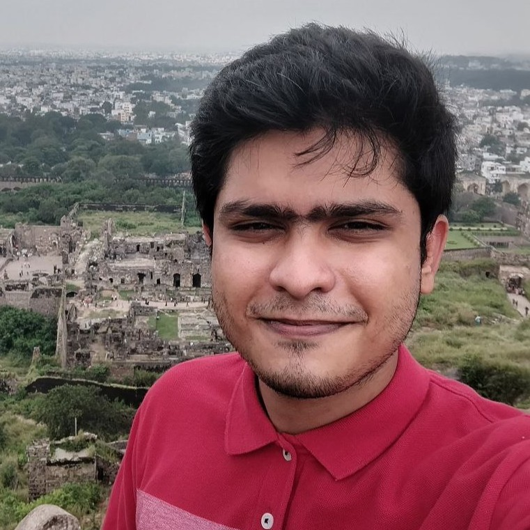
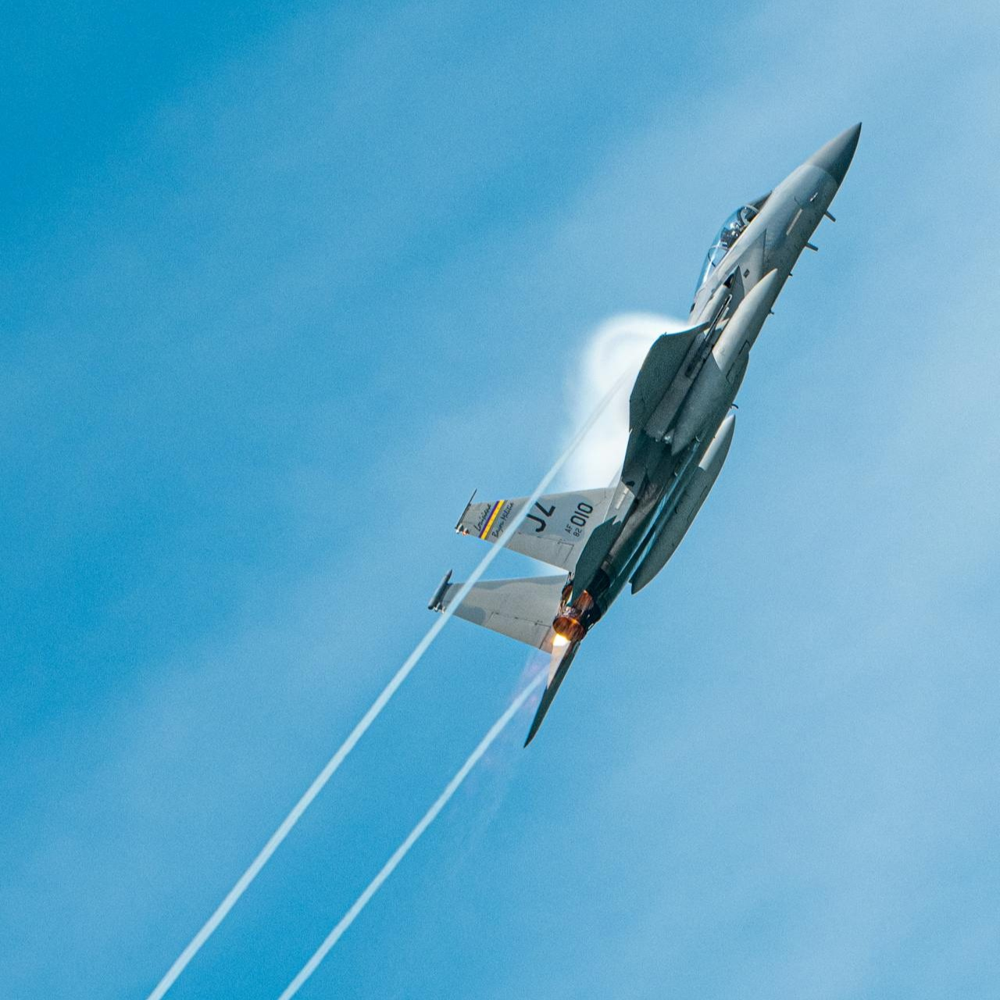
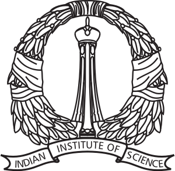
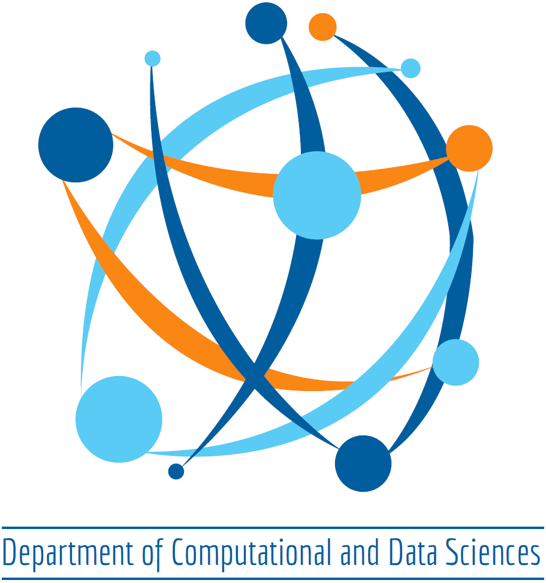
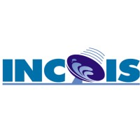
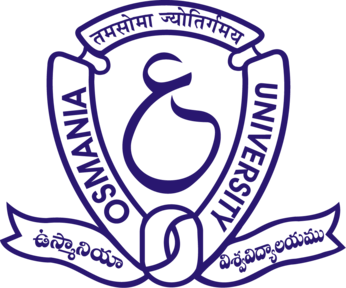
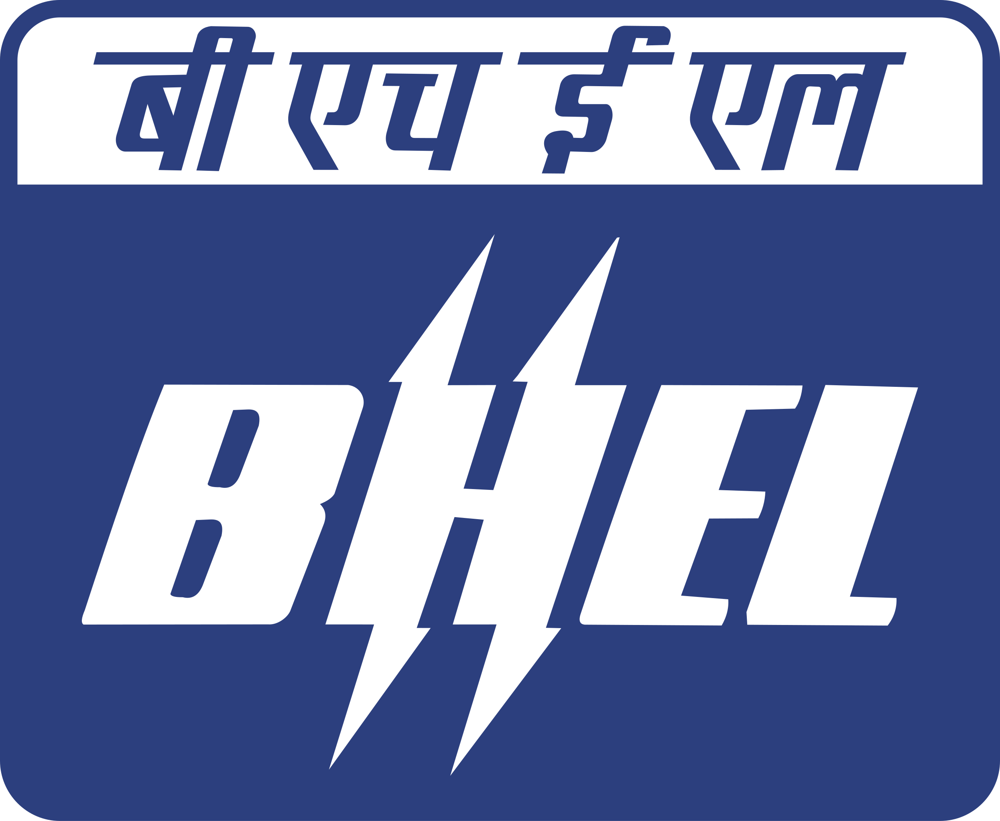
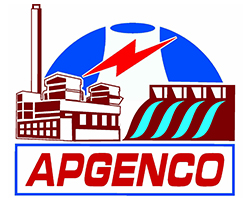

Computational and Data Science Engineer
I am a computational engineer and data-science professional with a passion for building robust, data-driven systems. Trained at IISc, I have leveraged machine learning and high-performance computing to solve practical challenges. I am driven by continuous learning and enjoy applying core statistical and engineering principles to a wide variety of technical puzzles.

I'm an engineer who keeps drifting toward the mathematical side of things. The equations underneath, and the data on top. These days I'm working through statistics, machine learning and data science.
Along the way I've tested telecom firmware, helped build tools for tsunami early warning systems, and done research in computational science.

Statistics, probability, inferencing, and what a model can and can't tell you.
How language models work, and where they fall short.
The night sky, whenever the clouds allow.
Tea, ideally from a shop I haven't tried yet.
Updated October 2026


Indian Institute of Science, Bengaluru
Research on how learned models of small-scale turbulence behave when flow conditions change.

INCOIS, Ministry of Earth Sciences
Decision support for tsunami early warning, a marine energy atlas for India, and fisheries research.
Tata Consultancy Services
Test engineer on a modem-firmware team, working with . Also taught a batch of 30 new joiners.



Osmania University, Hyderabad
Summer internships at BHEL (2019) and AP Power Generation Co. (2018).
S. D. Sudhakar, K. Aditya, R. Lakkaraju. Investigating Shallow Layer Fine-Tuning in Transfer Learning for Generalization in LES of Turbulent Flows. 26th Aeronautical Society of India CFD Symposium. Abstract
S. Jha, S. D. Sudhakar, S. Majumder, et al. A multidecadal study of the Malabar upwelling system influencing Indian Mackerel landings. Journal of Marine Systems, 246. Paper
Stargazing, and the occasional rabbit hole about how big everything is.
Documentaries that make the universe feel enormous.
Hunting for new tea shops.
Love good stationery, pens, paper and notebooks.